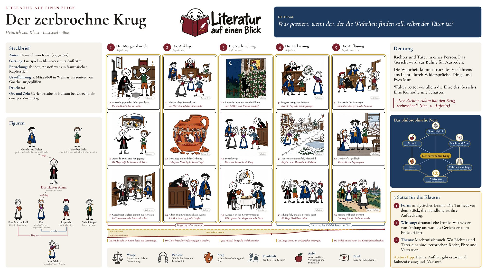
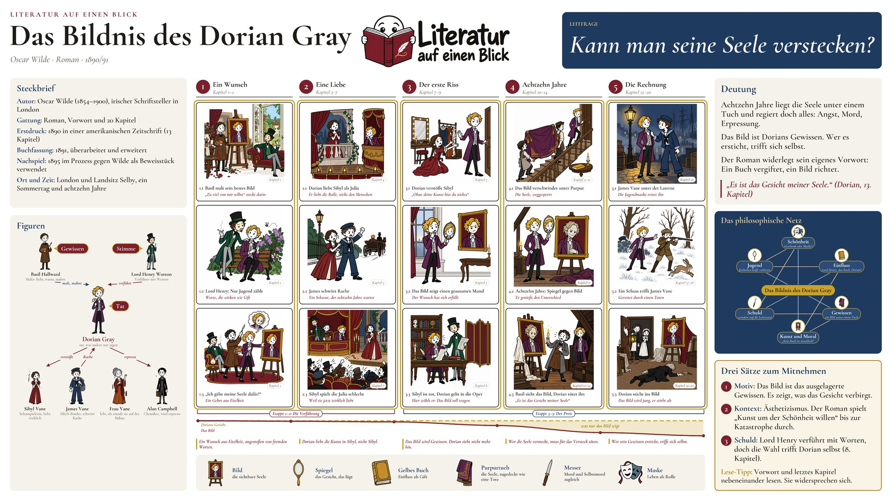
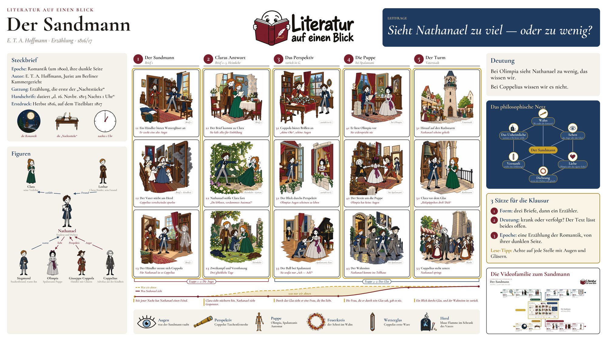

Zum Herunterladen
Die Lernplakate
Ein Blatt je Buch: Handlung, Figuren, Symbole, Deutung, drei Sätze für die Klausur.
-

Heinrich von Kleist · um 1800 · zwischen Klassik und Romantik
Der zerbrochne Krug
-

Oscar Wilde · 1890 · Fin de Siècle
Das Bildnis des Dorian Gray
-

E. T. A. Hoffmann · 1816 · Romantik
Der Sandmann


Drucken und verwenden
Die PNG-Fassung hat 9600 × 5400 Pixel. Das reicht für DIN A1 (84 × 59 cm) in guter Qualität; für A3 oder A4 genügt die JPG-Fassung. Querformat, 16:9.
Die Plakate sind zum Lernen und für den Unterricht gedacht. Bitte unverändert weitergeben und „Literatur auf einen Blick“ als Quelle nennen. Für alles darüber hinaus: Kontakt.